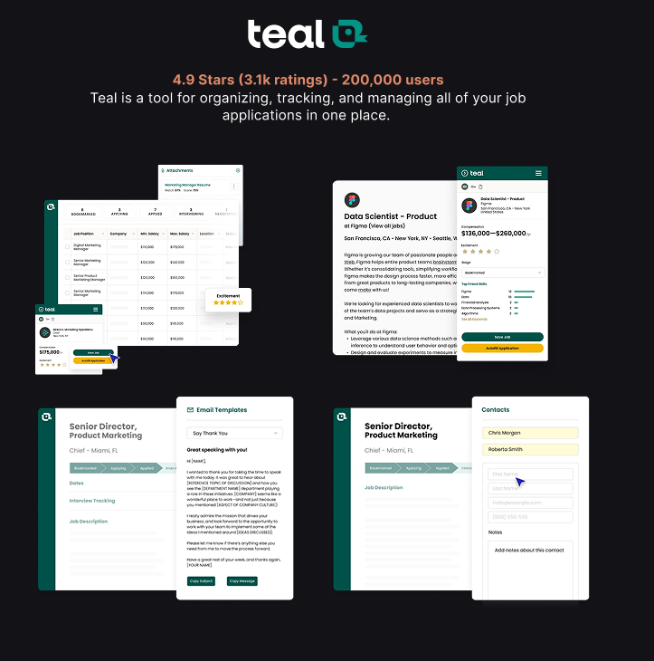
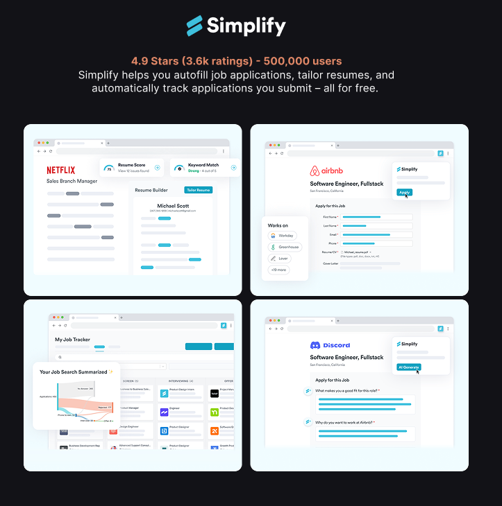

Motion
[Placeholder] Experiment one
One line on what you were testing.
Pactto is a canvas-based platform designed to centralize the video production lifecycle. My role was to eliminate the context gap between live and async work by introducing a system that anchors feedback directly to the asset. This replaced scattered Slack messages with precise, timeline-based comments and tasks that persist long after the meeting ends.
The video editing workflow is fragmented. Teams are forced to juggle separate tools for feedback, tasks, and communication, losing critical context with every switch.

Pactto unifies live conferencing and the entire video editing workflow into a single, canvas-based "Room." It replaces scattered tools with one intelligent space where feedback, decisions, and production happen together.
We synthesized our research into an affinity map. While we uncovered several friction points, we prioritized one key insight to tackle first.


With 42.9% of users blocked by unclear feedback, we identified a critical flaw: Pactto was purely synchronous. If a stakeholder joined late or missed a meeting, the context would be missing, forcing them to manually chase colleagues via Email or Slack just to catch up. We needed a Contextual Library to ensure that feedback persists on the asset, not just in the moment.
Preserve feedback context in async video reviews so decisions stay clear, traceable, and tied to the work?
This question guided the design of our core feature: a unified intelligent canvas where feedback organizes itself.
We followed a classic iterative design approach, testing and updating our prototypes on a rigorous weekly cycle to ensure constant validation.

Our stakeholder cycle required us to present functional features every week. Static mocks couldn't capture the complexity of video scrubbing or interaction timing, so we inverted the traditional workflow.
Instead of perfecting pixels first, we used Google AI Studio to "vibe code" functional prototypes.
We built rough, interactive web prototypes in code to validate the feel of the interactions (like drag-to-comment) during weekly reviews.
This allowed us to iterate on complex mechanics in real-time. Once an interaction was validated in code, we moved to Figma to codify the visual specs for the final Design System.
Engineers received a dual handoff: the Code Prototype for exact behavior and the Figma Design System for exact visuals.
To filter our ideas into a shipping product, we conducted group reviews in Google Sheets. We weighed Priority against Effort (Design & Eng) to decide exactly which features were critical for the Open Beta and which could wait.
Research confirmed the "Async Gap" was a critical failure point. With the live tools already stable, we prioritized the Commenting Suite as our absolute P0, building a persistent feedback layer to finally sit alongside the real-time workflow.

We designed three distinct commenting primitives to handle every type of creative feedback:
Anchor feedback to a precise coordinate on the frame. Clicking exactly where the issue is removes the ambiguity, so the editor knows which pixel needs attention.
Draw a bounding box to highlight a region or group of elements, defining the scope of a change without describing the location in words.
Feedback that spans a duration rather than a single frame: mark a start and end on the scrubber to critique pacing, audio sync or action sequences.
Give users the ability to comment in different ways for different needs using distinct tools, but access them through a Single Interaction Point to minimize cognitive load.
The Crossroads (Simplicity vs. Accountability): We faced a strategic choice: follow the industry standard of generic comments (like Figma) or build for strict accountability. Our research showed that for video editors, generic simplicity created paralysis leaving them unable to distinguish between a casual "maybe" and a critical "must-do" within a flood of feedback.
We bridged the gap by placing a lightweight "Task" toggle directly inside the comment box. This allows "Chat" and "Work" to coexist in one stream, giving editors the freedom to discuss ideas loosely or filter the feed to reveal a prioritized checklist of mandatory action items.
By adding the toggle, we introduced a micro-moment of friction, the user now has to make a choice ("Is this a task?"). However, we accepted this slight increase in cognitive load at input to drastically reduce the cognitive load at review. We sacrificed a minimal UI to gain absolute accountability.
While we developed a suite of AI tools, I want to highlight Smart Voice, the feature that solves the conflict between speed and documentation.
Smart Voice automatically transcribes spoken feedback and anchors it to the video timeline. By capturing the nuance of voice notes, reviewers can provide detailed context without typing, while editors receive precise, actionable text synced to the exact moment.
When designing AI, we required Baked-In Intelligence to avoid disconnected "AI Islands." Smart tools needed to live inside the flow so assistance appears exactly where the user is working, not in a separate tab.
We expanded Pactto's existing UI into a modular Design System (Typography, Color, Components) to ensure consistency.
We mapped every user flow to its corresponding "Vibe Coded" prototype, giving engineers a reference for exact animation behaviors.
Crucially, we tagged every feature with MVP Priority Levels, clearly distinguishing "Open Beta Must-Haves" from "Fast-Follows" to prevent scope creep.
We successfully transformed a fragmented "Frankenstein" workflow into a unified, intelligent production environment. By delivering a production-ready Design System and prioritized MVP, we positioned Pactto to launch an Open Beta that reduces feedback loops from days to minutes.
We allowed a P1 feature (AI meeting summaries) to block the release of our core Commenting System, costing us a two-week delay. Since the AI feature was ultimately cut from the Open Beta anyway, we learned that prioritizing enhancements over the core feedback loop only hinders essential validation.
I would treat the core utility (Commenting) and the enhancements (AI Summaries) as separate releases. By shipping the essential async tools first, we could have validated the primary workflow immediately, rather than holding it hostage for a secondary feature.
Job hunt tools optimise for volume. The evidence says volume is both emotionally corrosive and strategically worse.
I designed and built a browser-extension companion around the user's emotional state instead of engagement metrics, leading two designers and shipping every decision in code.
I was living the hunt myself, so we started with desk research rather than my own frustration. The surveys are unambiguous: the damage is the majority experience. What none of them explain is why — that gap is what our interviews had to fill.
say the job search has hurt their mental health
Resume Genius, Job Seeker Survey
1,000 active US job seekers · August 2024
Reported by Forbes ↗are completely burned out by the hunt
Insight Global / Atomik Research
501 recently unemployed US adults · July 2023
insightglobal.com ↗The desk research told us the cost was real but not where it came from, so we built the discussion guide around three things a survey could not answer.
How do people actually track applications once the volume climbs?
Which parts of applying cost the most time, and which cost the most energy?
What makes someone lose momentum, and what gets them started again?
We interviewed five job seekers mid-hunt, from four applications a week to thirty. We deliberately included the high-volume end: that is where the tools claim to help most, and where the strain shows first.

We audited the two tools people kept naming, Teal and Simplify Copilot. Both are competent at what they set out to do: autofill forms, track statuses, push volume higher. Neither treats the volume itself as the problem — which is exactly what our interviewees were describing.


Every quote went onto an affinity map. Four clusters held, and all four sat on the same emotional fatigue rather than on any missing feature. Tap a card to read the quotes behind it.
Statuses are logged by hand and go stale.
“On my phone it's so quick to apply… I forget to log it into Excel.”
2 years in · ~30 applications a week
“Sometimes I get confused during HR calls because I've applied to so many jobs.”
7 months in · 6–8 a week
The same details are re-typed every time.
“Sometimes the form resets unexpectedly, and you have to re-enter all your information again.”
8 months in · 20+ a week
“It asked me to provide my LinkedIn link… which feels redundant since I'm applying through LinkedIn.”
4 months in · 15–20 a week
Research is paid upfront, before a word is written.
“Doing basic research on the company and writing a tailored cover letter feels the most repetitive.”
7 months in · 6–8 a week
“As an international student, it's even harder… it's not always clear what is important to highlight.”
7 months in · 6–8 a week
Most applications end in silence.
“A lot of the jobs tend to ghost you.”
4 months in · 15–20 a week
“Ghosting is frustrating, especially when I hear back after a long delay, like a month later.”
4 months in · ~4 a week
Existing tools organise the grind; none question it. Indeed's own data shows the highest-volume applicants are 39% less likely to get a positive response. The category optimises for the very behaviour that lowers people's odds.
Reduce the emotional cost of the job hunt, without taking the hunt away from the hunter?
This question shaped every surface that follows.
The question set the goal but could not choose between two reasonable designs. These two rules did, both straight out of the research — and several features lost.
Jobi gives someone the tools to stay consistent through their own hunt. It does not run the hunt for them. The point is to leave the user more capable than it found them, not more dependent.
Our users were already overwhelmed before they opened anything. Surface area became a cost to pay down rather than a scoreboard to win, so every feature had to earn the attention it asked for.
The audit showed Teal and Simplify competing on feature count. Matching them was the obvious way to look credible next to two funded products with hundreds of thousands of users.
A deliberately smaller surface: one conversation, one tracker, one practice room. Anything that did not answer a research finding was cut before it was built.
Jobi loses any feature-by-feature comparison, and power users who want dashboards and bulk tooling are better served elsewhere. Accepted, because the person we designed for is not shopping for features. They are tired.
Jobi rides along the whole hunt as a browser side-panel. You pick the roles; Jobi takes on what surrounds them. Each surface answers one of the four insights — and one was answered by building nothing at all.
Answers insight three: research is paid upfront, before a word is written.
The home surface is a conversation. Paste a role and Jobi tells you whether it's worth your time, tailors your documents, and researches the company — the half hour of tab-juggling happens in the panel instead.
Paste a role and Jobi scores the match out of 100, naming the strengths and the gaps, grounded in your actual CV rather than keyword soup.
It pulls the experiences that map best to the role and rewrites the bullets to lead with impact.
A first draft in your voice, specific to the role, a starting point, not a generic template.
It reads past the posting and onto the company's own site: mission, culture, values, the things you want before an interview. Grounded only in sources it actually found, and honest about what it doesn't know.
A cover letter is plain prose, so generating one outright is easy. A CV is a designed document. Generating one on the spot means pouring the user’s content into our templates, and in design-led fields a generic template reads worse than the CV they already have.
Jobi rewrites and reorders the content against the role and hands it back. The user keeps their own layout. This one is still open, and it is the call we are least settled on.
Less magical than the cover letter flow, and it leaves the last step with the user. The alternative risks actively hurting candidates in the fields where presentation is part of the judgement.
Answers insight two: the same details are re-typed every time.
This was the most literal pain point in the research, and the one competitors solve first. We tried three routes at it. The most obvious one is the one we removed.
Re-typing was the second insight, so autofill was in the first build. To be worth having it has to fill the fields that actually repeat: phone number, email, address, place of birth.
Cut entirely. Filling those fields means holding sensitive personal data, and a leak would land on us. Strip them out and what is left does not justify the install.
The most repetitive part of applying stays manual, and a research finding goes deliberately unanswered. We would rather ship a smaller tool than become custodians of data we cannot promise to protect.
The call is enforced by the architecture, not by good intentions: the extension holds no secrets and does no AI work of its own. Everything sensitive stays behind the API, so there is nothing in the browser worth leaking.
What survives are the two routes that never touch sensitive data.
LinkedIn and portfolio URLs get asked for on almost every form. Right-click anywhere in the page and they are there, so the links people retype most often are typed once.
The fixed fields were never where the time went. The open questions are, and talking through an answer is faster than drafting one. Speak it and pick how much help you want: verbatim, punctuation tidied, or rewritten into the corporate register the form expects. That last mode is the point. You get to think casually and still sound like the application.
Answers the fourth insight from the other side: if replies are scarce, the few that come have to count.
A voice-driven mock interview that role-plays the real thing: questions, follow-ups, and feedback in the moment.
Voice roleplay is the showcase of the interview, but speech recognition can be unsupported, the mic denied, or text-to-speech can fail, any of which would dead-end the lesson.
Voice and typed paths run in parallel throughout. A blocked mic falls back to a text field, and a speech failure just shows the line and continues.
Two near-identical speech subsystems to build and maintain, accepted so the experience never traps a user.
Answers insight one: statuses are logged by hand and go stale.
Trackers fail because logging is manual, so the fix was to stop asking people to log. One click on any posting captures the role, with follow-up reminders so nothing goes quiet because you forgot to chase it.
A prompt appears on any job posting. One click files the role, which is the difference between a tracker that keeps up with a heavy week and one that quietly falls behind it.
Jobi summarises the description and stores it. When a posting is taken down and an interview lands weeks later, the role you actually applied for is still readable.
The cover letter generated for that role is saved against it, so you walk into the call knowing exactly what you claimed. A spreadsheet can hold this, but not without becoming unusable.
Answers insight four: most applications end in silence.
Ghosting is an employer behaviour: no feature makes a company reply, and a product claiming otherwise would be lying. When the problem cannot be removed, the only honest goal is to make it cost less. Three things already in the product carry that weight.
“That's normal three days in” is a factual statement that happens to move the blame off the user. Read as a verdict on yourself, silence is corrosive. Read as the base rate, it is just weather.
Follow-up reminders hand back the one lever that is actually theirs. Chasing a role is in the user's control. Hearing back never was, and the difference matters when hope is the scarce resource.
When a reply does arrive five weeks later, the saved posting and the exact cover letter are still there. The interview starts from remembering rather than bluffing, which is what one of our interviewees said went wrong.
A job hunt accumulates rejections. Standard trackers give every status equal weight in traffic-light colours, turning the board into a wall of anxiety.
Statuses split into Active and Closed, so rejection is real but tucked away. Colour survives only in a small status dot.
Closed applications are slightly harder to review, and there's less at-a-glance colour coding; the design leans on labels instead.
The three of us ran research, ideation and design together in Figma. The build I took on alone: every screen went into Claude Code — loaded with the interviews, the affinity map and the reasoning behind every decision — and came out as working software.

Claude Code held every artefact and research piece, so the build never drifted from the why. The design and the code came from the same source of truth.
The panel grew into one 13,700-line file, at which point design changes started costing more than they were worth. Splitting it into fourteen modules, each with one job, was a design decision as much as an engineering one.
When two paths were both reasonable, we did not argue from taste. We fell back on a research finding, or on an earlier decision we had already reasoned through, and stayed consistent.
Significant decisions were written down as crossroads, decision and cost, weighing the design against code, API spend and strategy. That record is the discipline this study is built from.
Emotional design usually chases engagement. Jobi points the same toolkit the other way: the mascot, the motion and the writing lower the cost of a task people dread. Aimed at the nervous system, not the dopamine loop.
A mascot needs personality and a face is the fastest way to give it one. But Jobi already watches your hunt in order to help, and a talking face tips a companion into a supervisor.
No mouth in any pose. It works through the eyes and the set of its body: glasses to analyse a role, a gentle bob while you wait, confetti when you land one. Cursor-tracking eyes were built, tested, and cut.
Far less expressive range than a face, so the warmth has to come from motion, which is harder to get right and slower to build. Accepted because alive was becoming watchful.
Momentum is the thing our interviewees actually lost, and streaks are the proven tool for it. They are also the mechanic most likely to turn a bad week into guilt, which is the exact failure the research warned about.
Keep the streak, strip its teeth. It counts the days you showed up rather than punishing the ones you didn't, it never sends a don't-lose-it warning, and the number goes quiet on a rejection instead of loud.
A forgiving streak is a weaker retention lever than a fragile one, and we gave up the pressure that makes the mechanic work commercially. Accepted, because a counter that punishes a burnt-out user is the Duolingo owl with a different hat.
The personality is a written system, not a coat of paint: an accountability partner rather than a cheerleader — it expects you to show up, and teaches you to stop needing it. The anti-reference was Duolingo, and not for the streak itself but for the guilt around it; someone applying for their thirtieth job this month does not need another thing shouting at them.
“Still nothing?! Don’t give up, you’ve got this!”
“No reply yet. That’s normal three days in. Want to line up the next two while we wait?”
Rejection is where a companion is won or lost. No exclamation points, no clichés, the dry wit goes quiet: move the blame off the user, then point forward.
Time in app and applications sent would both rise if we were making people more dependent — those are the volume tools' metrics, and the opposite of the goal. The closed beta tests three things instead.
Jobi runs the tracker, so it knows what share of saved roles reach Applied instead of dying at Saved — measured against the industry's ~92% application abandonment rate.
A one-tap check-in at the start and end of the beta, rating how in control and how burnt out someone feels. We track the shift per person, not the headline number.
When a role is marked Rejected, Jobi watches whether they open the extension again. The streak is deliberately forgiving, so a return is closer to a real signal than a reflex.
[Placeholder] One line on what you do and who for. Keep it to a sentence — the sections below carry the detail.
[Placeholder] A second line for the angle that makes your work yours: the craft, the obsession, the reason.
Two lines on a rule you actually design by, and the trade-off it costs you.
Two lines on a rule you actually design by, and the trade-off it costs you.
Two lines on a rule you actually design by, and the trade-off it costs you.
[Placeholder] A line on how you pick tools — and what you refuse to let them decide for you.
[Placeholder] What you do when you are not designing, in a sentence or two. This is the part people remember in an interview.
[Placeholder] The half-finished things: motion studies, interaction tests, illustrations and ideas that never grew into a case study.
One line on what you were testing.
One line on what you were testing.
One line on what you were testing.
One line on what you were testing.
One line on what you were testing.
One line on what you were testing.
[Placeholder] A line on what you are poking at right now, so the page reads as alive rather than archived.